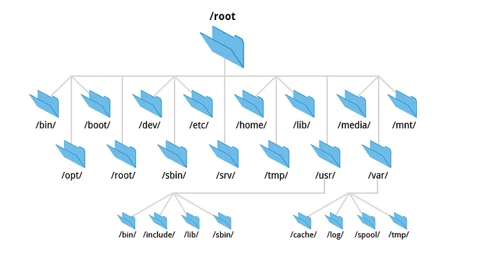

Module 1: Administration Système
Créé par Haruna Rashid Yakubu pour Worketyamo
Introduction
GNU/Linux est un système d’exploitation libre fonctionnant sur la base d’un noyau Linux, également appelé kernel Linux. Linux est une implémentation libre du système UNIX et respecte les spécifications POSIX. GNU/Linux est généralement distribué dans un ensemble cohérent de logiciels, assemblés autour du noyau Linux et prêt à être installé. Cet ensemble porte le nom de “Distribution”
Exemples de Distributions
- Debian qui sert de base pour la distribution ubuntu
- RedHat qui sert de base pour la distribution centOs
- Arch qui sert de base pour la distribution Manjaro
1.1- Qu’est-ce qu’un
système d’exploitation ?
Un système d’exploitation (OS) est un ensemble de programmes permettant la gestion des ressources disponibles d’un ordinateur. Parmi cette gestion des ressources, le système d’exploitation est amené à :
- Gérer la mémoire physique ou virtuelle.
- Intercepter les accès aux périphériques.
- Offrir aux applications une gestion correcte des tâches
- Protéger les fichiers contre tout accès non autorisé.
- Collecter les informations sur les programmes utilisés ou en cours d’utilisation
Différence entre CLI Et GUI
L'interface de ligne de commande (CLI) et l'interface graphique (GUI) sont deux façons différentes d'interagir avec un système d'exploitation.
CLI
La CLI est une interface texte qui utilise des commandes et des arguments pour contrôler le système. Les commandes sont généralement courtes et concises, et elles sont entrées en utilisant le clavier.

GUI
La GUI est une interface graphique qui utilise des menus, des boutons et des autres éléments visuels pour contrôler le système. Les utilisateurs interagissent avec la GUI en utilisant une souris ou un pavé tactile.

Hiérarchies du système
de fichiers Debian

Les hiérarchies du système de fichiers Debian sont un ensemble de règles et de conventions qui définissent l'emplacement des fichiers et des répertoires dans le système de fichiers d'un système Debian.
Les hiérarchies du système de fichiers Debian sont un ensemble de règles et de conventions qui définissent l'emplacement des fichiers et des répertoires dans le système de fichiers d'un système Debian.
La hiérarchie des systèmes de fichiers Debian est basée sur le standard , qui est un standard ouvert pour l'organisation des systèmes de fichiers Linux.
Manipulation de fichiers sous Linux

- Navigation dans les Répertoires
- Manipulation des Fichiers et Répertoires
- Affichage et Recherche de Contenu
- Permissions sur les Fichiers
- Manipulation Avancée des Fichiers
- Liens Symboliques (Symlinks) et Liens Durs
- Commandes Utiles
Sommaire:
- la commande cat
- la commande
more et less - La commande
head et tail - La commande grep
3. Affichage et Recherche de Contenu
La commade head et tail
Les commandes head et tail affichent respectivement les premières et dernières lignes d'un fichier.
Commande head
Syntaxe de la commande head
head [OPTIONS] [NOMBRE] FICHIERExample
#Afficher les 10 premières lignes d'un fichier nommé "exemple.txt"
[test@example ~]$ head exemple.txt
#Afficher les 5 premières lignes d'un fichier nommé "exemple.txt" :
[test@example ~]$ head -n 5 exemple.txt
Commande tail
Syntaxe de la commande tail
tail [OPTIONS] [NOMBRE] FICHIERExample
#Afficher les 10 dernières lignes d'un fichier nommé "exemple.txt"
[test@example ~]$ tail exemple.txt
#Afficher les 5 dernières lignes d'un fichier nommé "exemple.txt" :
[test@example ~]$ tail -n 5 exemple.txt
La commande grep
La commande grep est un puissant outil de recherche de motifs dans des fichiers ou des flux de texte sous Linux. Elle est utilisée pour filtrer les lignes qui correspondent à un motif spécifique, ce qui en fait un outil essentiel pour l'analyse de fichiers de journal, la recherche de chaînes dans des scripts, et bien plus encore.
DEMO
Syntaxe
grep [OPTIONS] [MOTIF] fichierExample
#Recherche le texte ou le motif dans le fichier exemple.txt
[test@example ~]$ grep "motif" exemple.txt
#Recherche le texte ou le motif correspondant dans le fichier exemple.txt de manière recursive
[test@example ~]$ grep -r "motif" exemple/
Options Courantes de la commande grep:
- -i : Ignore la casse (recherche insensible à la casse).
- -n : Affiche le numéro de ligne avec le résultat.
- -r ou -R : Recherche récursive dans les répertoires.
- -v : Inverse la correspondance, affiche les lignes qui ne contiennent pas le motif.
- -c : Affiche le nombre total de lignes correspondantes.
- -l : Affiche uniquement les noms de fichiers contenant des correspondances.
Utilisation de Caractères Spéciaux, Wilcards
Caractères Wildcard
- . :Représente n'importe quel caractère.
- * : Représente zéro ou plusieurs occurrences du caractère précédent.
Examples
grep [OPTIONS] [MOTIF] fichierExample
# Recherche "pattern", "patern", "paXXXrn", etc.
[test@example ~]$ grep "pa.*rn" fichier
#Recherche le texte ou le motif correspondant dans le fichier exemple.txt de manière recursive
[test@example ~]$ grep -r "motif" exemple/
Utilisation des Classes de Caractères
- [aeiou] :Recherche n'importe quelle voyelle.
- [^0-9] : Recherche un caractère qui n'est pas un chiffre.
Examples
grep [OPTIONS] [MOTIF] fichierExample
# Recherche les lignes contenant au moins une voyelle.
[test@example ~]$ grep "[aeiou]" fichier
# Recherche les lignes commençant par un caractère non numérique.
[test@example ~]$ grep "^[^0-9]" fichier
Utilisation des Opérateurs logiques
- OR (|)
- AND (-e)
- NOT (-v)
Example
# Cette commande recherche les lignes contenant soit le motif1, soit le motif2.
[test@example ~]$ grep "motif1\|motif2" fichier.txt
# Cette commande recherche les lignes contenant à la fois le motif1 et le motif2.
[test@example ~]$ grep -e "motif1" -e "motif2" fichier.txt
# Cette commande affiche les lignes ne contenant pas le motif spécifié.
[test@example ~]$ grep -v "motif" fichier.txt
# Cette commande recherche les lignes contenant soit le motif1, soit le motif2.
[test@example ~]$ grep "motif1\|motif2" fichier.txt
# Cette commande recherche les lignes contenant à la fois le motif1 et le motif2.
[test@example ~]$ grep -e "motif1" -e "motif2" fichier.txt
# Cette commande affiche les lignes ne contenant pas le motif spécifié.
[test@example ~]$ grep -v "motif" fichier.txt
Les Expressions régulières
Une expression régulière est une chaîne de caractères qui décrit un motif ou un modèle que vous souhaitez rechercher dans un texte.
tableau des métacaractères les plus courants utilisés dans les expressions régulières
Métacaractères
| Métacaractère | Signification |
|---|---|
| . | n'importe quel caractère |
| [] | un ensemble de caractères |
| * | zéro ou plusieurs occurrences du caractère précédent |
| + | une ou plusieurs occurrences du caractère précédent |
| ? | zéro ou une occurrence du caractère précédent |
Métacaractères
| Métacaractère | Signification |
|---|---|
| ^ | Correspond au début de la ligne |
| $ | la fin de la ligne |
| {n} | exactement n occurrences du caractère précédent |
| {n,m} | au moins n et au maximum m occurrences du caractère précédent |
Demonstration
Compression & decompression
La compression et l'archivage sont deux techniques couramment utilisées en informatique pour réduire la taille des fichiers et des données. La compression consiste à réduire la taille d'un fichier en éliminant les redondances des données. L'archivage consiste à regrouper plusieurs fichiers et/ou dossiers dans un seul fichier.
Compression
La compression est une technique qui permet de réduire la taille d'un fichier en éliminant les redondances des données. Il existe de nombreux algorithmes de compression différents, chacun avec ses propres avantages et inconvénients.
Les algorithmes de compression les plus courants sont les suivants :
- Gzip : un algorithme de compression sans perte qui utilise la méthode de compression DEFLATE.
- Bzip2 : un algorithme de compression sans perte qui utilise la méthode de compression Burrows-Wheeler.
- XZ : un algorithme de compression sans perte qui utilise la méthode de compression LZMA2.
Archivage
L'archivage consiste à regrouper plusieurs fichiers et/ou dossiers dans un seul fichier. L'archivage est souvent utilisé pour faciliter le transfert de données, la sauvegarde ou la restauration de données.
Les formats d'archives les plus courants sont les suivants :
- Tar : un format d'archive qui ne compresse pas les données par défaut.
- Gzip : un format d'archive qui utilise l'algorithme de compression gzip.
- Bzip2 : un format d'archive qui utilise l'algorithme de compression bzip2.